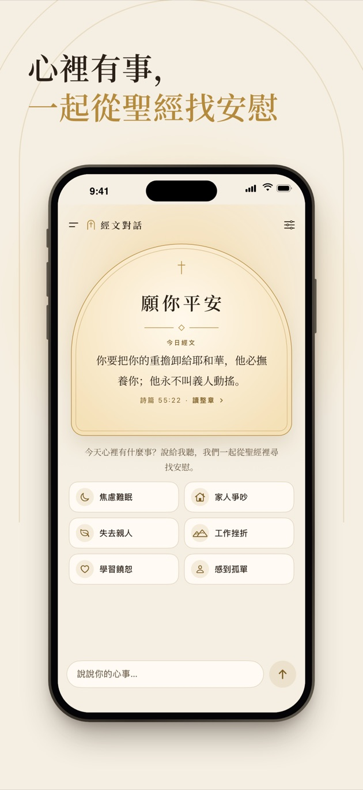
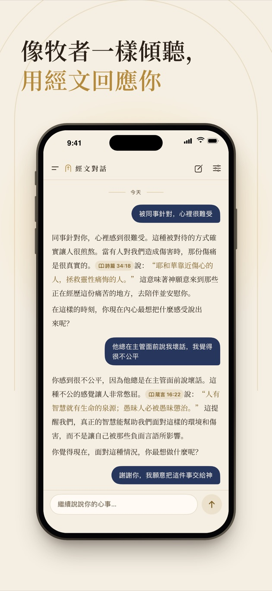
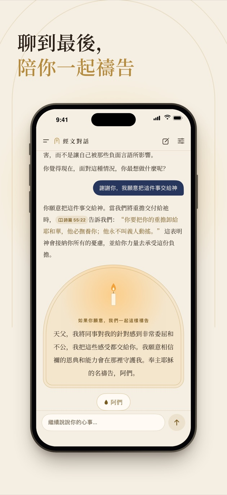

像牧者一樣傾聽的聖經 AI，全程在你的 iPhone 上
說出你的心事，經文對話會先聽懂你，再用和合本的經文回應你，聊到合適的時候陪你一起禱告。對話不上傳，沒有帳號、廣告和追蹤；免費試用 3 天，之後一次性買斷，不是訂閱。
在 App Store 下載
需要 iOS 18 或以上、6 GB 以上記憶體的 iPhone



它和別的聖經 App 有什麼不一樣
- 一段真正的對話：不是一次給你一串經文，而是像牧者那樣一來一回地聊，經文自然地融在話裡，聊到合適的時候帶你一起禱告。
- 經文準確：只引用和合本、World English Bible、King James Version 的原文，引錯的地方會自動換回原文；點開出處能看到前後幾節。
- 完全離線、不上傳：AI 模型在手機上執行，對話不會離開這台 iPhone。
- 難的時候先顧到你：提到傷害自己的念頭時，先給出你所在地區的求助熱線，再繼續陪你說話。
- 簡體、繁體、英文：用哪種語言說，就用哪種語言回答。
常見問題
對話在哪裡處理？
在你的 iPhone 上。對話用的 AI 模型（Google Gemma 4）和檢索模型都在手機上執行，不經過任何伺服器。
對話會存到伺服器上嗎？
不會，我們沒有伺服器。對話紀錄只保存在這台 iPhone 上，不進 iCloud 和電腦備份，鎖定時加密，可以隨時刪除一段或全部刪除。
會拿我的對話去訓練 AI 嗎？
不會。你的對話從來不會傳給我們，我們看不到，也不可能拿去訓練。
用的是什麼譯本？
中文用和合本（簡體、繁體），英文用 World English Bible 和 King James Version，都是公有領域的譯本。回答裡引用的經文會和 App 裡的原文逐字核對，引錯的自動換回原文。
多少錢？
免費下載，可以先免費試用 3 天，不限次數。之後一次性購買（美國 US$2.99，其他地區以 App Store 顯示為準）就能一直用下去，不是訂閱，不會自動扣款。
哪些 iPhone 能用？
需要 iOS 18 或以上、6 GB 以上記憶體的 iPhone（iPhone 13 Pro、iPhone 14 或更新的機型）。AI 模型約 3.7 GB，iOS 26 起隨 App 一起從 App Store 下載，建議連接 Wi-Fi。
能代替牧者或心理諮商師嗎？
不能，經文對話是靈修輔助。如果你有傷害自己的念頭，請馬上聯絡身邊信任的人、當地的求助熱線或急救電話。